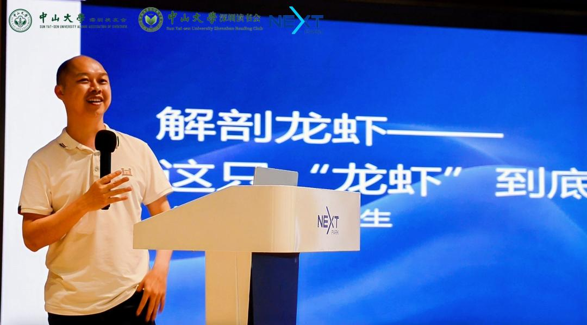
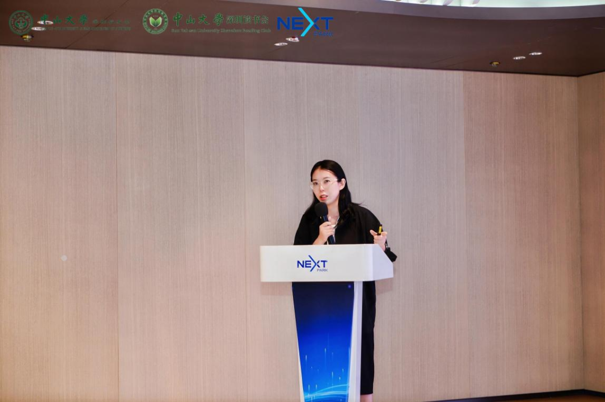
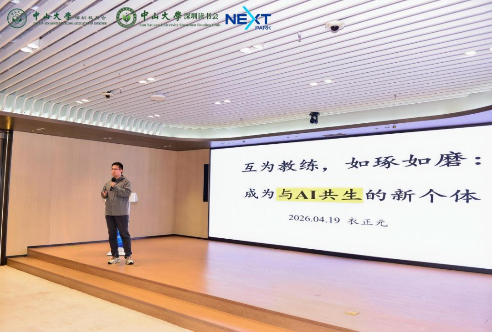
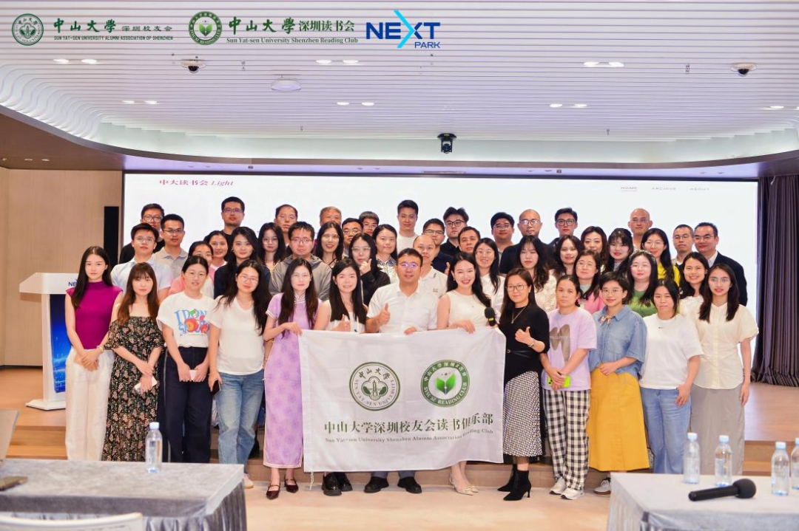

过去这一年，AI 的变化快得让人几乎来不及适应。
它不再只是一个有问必答的工具，而是开始学会自己拆解任务、调用资源、持续推进。当“硅基大脑”变得越来越能干，作为“碳基生物”的人类，工作边界究竟在哪里？那些曾经引以为傲的能力，还会被需要吗？
带着这样的疑问，4 月 19 日下午，三位在 AI 浪潮中深度实践的校友嘉宾，走上了 Light 第五期的讲台。他们带来的，不只是方法论和实践经验，更有在技术快速演进的时代里，对工作、成长与自我价值的重新理解。
这并不是一场关于“谁先学会用 AI”的竞赛。更像是一次集体追问: 当越来越多的任务可以被交给机器，人还要靠什么确认自己的位置，又要靠什么守住自己真正不可替代的部分？
解剖那只叫 OpenClaw 的“龙虾”
崇生校友一开场，便抛出了一个让全场印象深刻的判断：“如果你不会安装 OpenClaw，说明你不需要它；如果你会安装，说明你也不需要它。”
这句话背后，是一种清醒的产品洞察。在他看来，很多人今天用热门智能体完成的事情，一年前的旧工具也能做，只是“龙虾”的热度，让大家第一次认真看见了这种可能性。

“AI 的价值，不是因为它有多强大，而是它终于从一个冷冰冰的通用工具，变成了那个只懂你、只为你服务的专属搭档。”
他分享了自己的实际用法：在后台搭建了策划人、脚本师、审片官等五个“数字员工”，买菜路上就能用手机聊出一周的视频脚本。Skill 和记忆越丰富，这只“虾”就越懂他。
但他真正提醒大家注意的，并不是要不要追逐最新的工具，而是要不要趁这个机会重新整理自己的工作方式。工具会迭代，热点会退潮，只有一个人如何表达需求、如何沉淀经验、如何把判断留在自己身上，才会在下一轮变化里继续发挥作用。
那个不会写代码的女孩，和她的 AI 员工
柒柒校友是个文科生，但在她的工作流里，那个叫“安娜”的 AI 助手，每天早上 8 点会准时在群里点名，把她和合伙人一天的工作安排得明明白白。
但她也没有回避那些“崩溃时刻”：AI 会偷懒、会胡编乱造，也会间歇性失忆。

“为什么同样的工具，有人用得像个宝贝，有人却觉得是个智障？”
她给出的答案并不复杂：要有耐心，要教它反思。更现实的方式，是把它当成一个需要带教的实习生，在它犯错时陪它复盘、帮它积累经验。她还建议，可以先用大模型帮自己写一份“个人说明书”，把身份、项目和决策偏好交给 AI，让它更快理解你。
她留下的一句话也很动人：“当你对它足够坦诚，它才会回报以同等的懂你。”
在机器面前，重新看见自己
如果说前两位嘉宾更侧重“怎么做”，那衣正元校友则把讨论拉回到了一个更深的问题：当 AI 越来越强，人究竟站在哪里？
他从 2017 年就开始和 AI 深度互动。工具换了一代又一代，但他最大的感受却是：把 AI 当作一面照见自己的镜子。

在他看来，当机器已经能给出越来越“完美”的答案时，人真正需要练习的，反而是提问的能力：面对陌生领域，先让 AI 帮忙提炼核心思维，再追问那些看似共识背后的分歧。持续追问、不断校正，本身就是一种新的学习能力。
“机器算得再快，它也无法代替人类去流泪、去感动、去爱。未来的世界，推演可以交给 AI，但感受和判断，永远属于我们。”
当工具越来越强，人要把什么留下？
三位嘉宾，每人 25 分钟，带来了三种不同的视角。崇生带大家看清了工具的本质，柒柒分享了在实战中保持反思的耐心，而正元则提醒众人，在狂奔的科技面前，不要弄丢了那份柔软的“人味”。
他们给出的答案并不完全相同，却都指向了同一个问题：当工具越来越强，人到底要把什么留在自己身上？也许，AI 从来不是人类的对立面。它更像是一个契机，逼着人们剥离那些机械而琐碎的日常，重新审视：生而为人，究竟为何而独特。
也许第五期 Light 最珍贵的地方，恰恰不在于它给出了一个标准答案，而在于它让人们短暂地停下来，看见同一个时代里的三种不同回应: 有人把 AI 训练成搭档，有人把 AI 当作团队成员，也有人借 AI 更认真地理解自己。技术仍在向前，但关于人的问题，也因此变得比以往更清晰。

策划 / 主持：Yoti